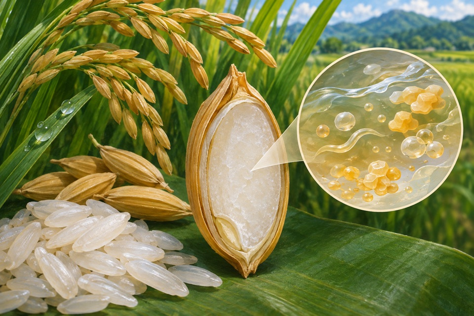
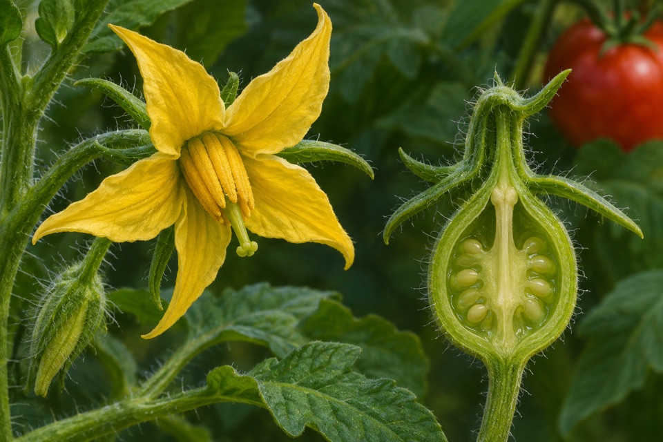
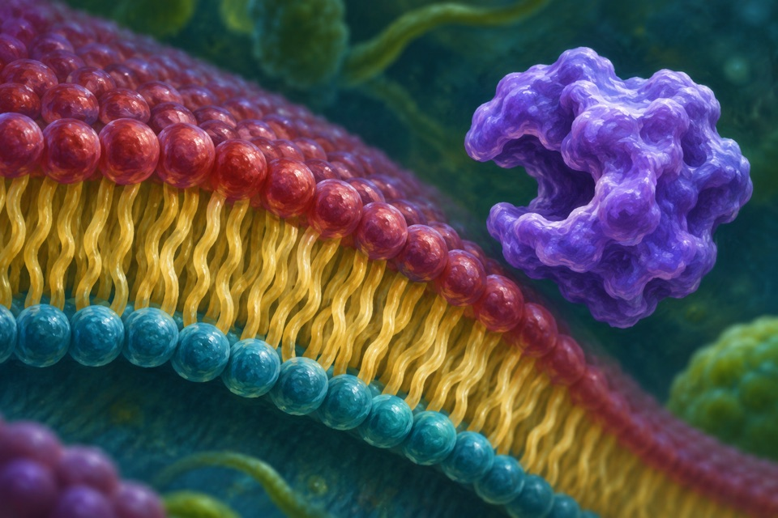
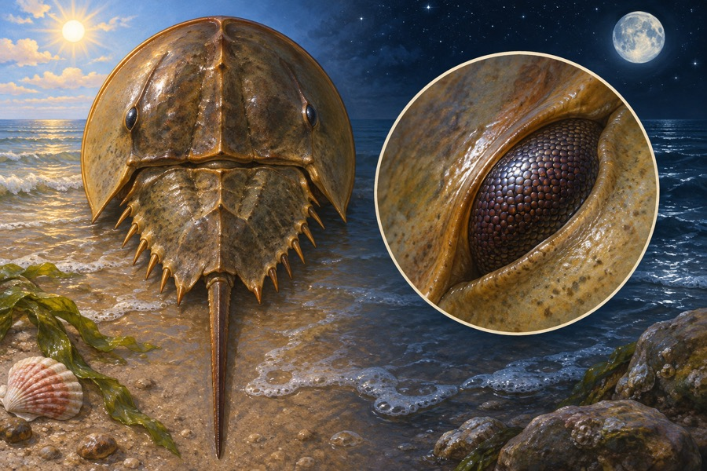
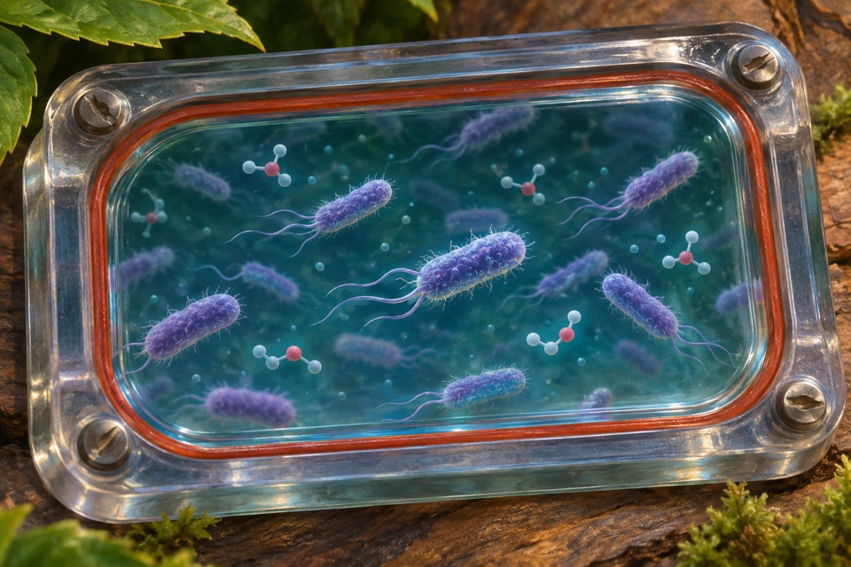
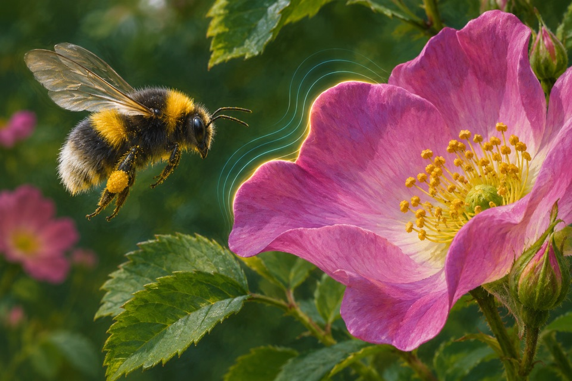

Module 01
Free tryptophan enrichment in rice seed
Quantify free and total seed tryptophan as separate composition endpoints.
Evidence recordOpen any of the ten modules to see the reported observation, its sources, and the research questions still open.

Quantify free and total seed tryptophan as separate composition endpoints.
Evidence record
Measure papilla elevation, retraction and duration of sustained shape.
Evidence record
Determine whether fruit growth initiates without fertilization and distinguish that endpoint from ripening and market quality.
Evidence record
Confirm phosphatidylserine production from phosphatidylcholine and separate it from competing hydrolysis.
Evidence record
Measure methionine in mature kernel flour while tracking seed protein composition.
Evidence record
Measure visual sensitivity across circadian phase.
Evidence record
Quantify methyl benzoate emission and distinguish emitted volatile from its precursor pool or pollinator behavior.
Evidence record
Measure growth and biomass yield when formate and CO₂ supply carbon.
Evidence record
Quantify rebaudioside D or M alongside closely related by-products.
Evidence record
Measure discrimination between equivalent artificial flowers that differ in electric field.
Evidence record